Examples
These examples show how to use the various analysis capabilities of GXBeam. Many of these examples also provide a verification/validation for the implementation of geometrically exact beam theory in GXBeam.
- Examples
- Linear Analysis of a Cantilever Partially Under a Uniform Distributed Load
- Linear Analysis of a Beam Under a Linear Distributed Load
- Nonlinear Analysis of a Cantilever Subjected to a Constant Tip Load
- Nonlinear Analysis of a Cantilever Subjected to a Constant Moment
- Nonlinear Analysis of the Bending of a Curved Beam in 3D Space
- Rotating Beam with a Swept Tip
- Nonlinear Dynamic Analysis of a Wind Turbine Blade
- Nonlinear Static Analysis of a Joined-Wing
- Nonlinear Dynamic Analysis of a Joined-Wing
Linear Analysis of a Cantilever Partially Under a Uniform Distributed Load
This example shows how to predict the behavior of a cantilever beam which is partially subjected to a uniform distributed load.

using GXBeam, LinearAlgebra
nelem = 12
# create points
a = 0.3
b = 0.7
L = 1.0
n1 = n3 = div(nelem, 3)
n2 = nelem - n1 - n3
x1 = range(0, 0.3, length=n1+1)
x2 = range(0.3, 0.7, length=n2+1)
x3 = range(0.7, 1.0, length=n3+1)
x = vcat(x1, x2[2:end], x3[2:end])
y = zero(x)
z = zero(x)
points = [[x[i],y[i],z[i]] for i = 1:length(x)]
# index of endpoints for each beam element
start = 1:nelem
stop = 2:nelem+1
# create compliance matrix for each beam element
EI = 1e9
compliance = fill(Diagonal([0, 0, 0, 0, 1/EI, 0]), nelem)
# create assembly
assembly = Assembly(points, start, stop, compliance=compliance)
# set prescribed conditions (fixed right endpoint)
prescribed_conditions = Dict(
nelem+1 => PrescribedConditions(ux=0, uy=0, uz=0, theta_x=0, theta_y=0,
theta_z=0)
)
# create distributed load
q = 1000
distributed_loads = Dict(
ielem => DistributedLoads(assembly, ielem; fz = (s) -> q) for ielem in
n1+1:n1+n2
)
system, converged = static_analysis(assembly;
prescribed_conditions = prescribed_conditions,
distributed_loads = distributed_loads,
linear = true)
state = AssemblyState(system, assembly;
prescribed_conditions = prescribed_conditions)We can construct the analytical solution for this problem by integrating from the free end of the beam and applying the appropriate boundary conditions.
# construct analytical solution
dx = 1e-6
x_a = 0.0:dx:L
q_a = (x) -> a <= x <= b ? -q : 0 # define distributed load
V_a = cumsum(-q_a.(x_a) .* dx) # integrate to get shear
M_a = cumsum(V_a .* dx) # integrate to get moment
slope_a = cumsum(M_a./EI .* dx) # integrate to get slope
slope_a .-= slope_a[end] # apply boundary condition
deflection_a = cumsum(slope_a .* dx) # integrate to get deflection
deflection_a .-= deflection_a[end] # apply boundary condition
# get elastic twist angle
theta_a = -atan.(slope_a)
# switch analytical system frame of reference
M_a = -M_aPlotting the results reveals that the analytical and computational solutions show excellent agreement.
using Plots
pyplot()
# deflection plot
plot(
xlim = (0.0, 1.0),
xticks = 0.0:0.2:1.0,
xlabel = "x (m)",
ylabel = "Deflection (m)",
grid = false,
overwrite_figure=false
)
x = [assembly.points[ipoint][1] + state.points[ipoint].u[1] for ipoint =
1:length(assembly.points)]
deflection = [state.points[ipoint].u[3] for ipoint = 1:length(assembly.points)]
plot!(x_a, deflection_a, label="Analytical")
scatter!(x, deflection, label="GXBeam")
# elastic twist plot (euler angle)
plot(
xlim = (0.0, 1.0),
xticks = 0.0:0.2:1.0,
xlabel = "x (m)",
ylabel = "Rotation Parameter \$\\theta_y\$",
grid = false,
overwrite_figure=false
)
x = [assembly.points[ipoint][1] + state.points[ipoint].u[1]
for ipoint = 1:length(assembly.points)]
theta = [4*atan.(state.points[ipoint].theta[2]/4) for ipoint =
1:length(assembly.points)]
plot!(x_a, theta_a, label="Analytical")
scatter!(x, theta, label="GXBeam")
# bending moment plot
plot(
xlim = (0.0, 1.0),
xticks = 0.0:0.2:1.0,
xlabel = "x (m)",
ylabel = "Bending Moment (\$Nm\$)",
grid = false,
overwrite_figure=false
)
x = [assembly.elements[ielem].x[1] + state.elements[ielem].u[1] for
ielem = 1:length(assembly.elements)]
M = [state.elements[ielem].M[2] for ielem = 1:length(assembly.elements)]
plot!(x_a, M_a, label="Analytical")
scatter!(x, M, label="GXBeam")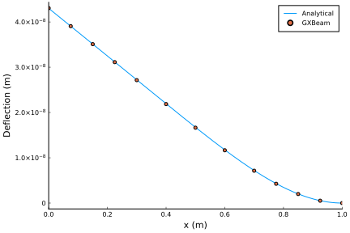
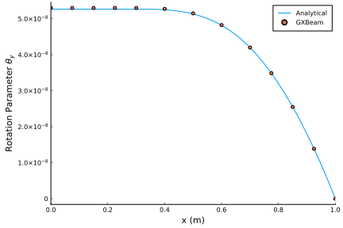
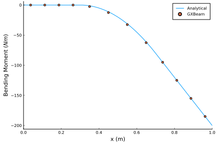
Note that we could have easily performed a nonlinear analysis for this problem by setting linear=false.
Linear Analysis of a Beam Under a Linear Distributed Load
This example shows how to predict the behavior of a beam which is clamped at one end and simply supported at the other end when subjected to a linear distributed load.

using GXBeam, LinearAlgebra
nelem = 16
# create points
L = 1
x = range(0, L, length=nelem+1)
y = zero(x)
z = zero(x)
points = [[x[i],y[i],z[i]] for i = 1:length(x)]
# index of endpoints for each beam element
start = 1:nelem
stop = 2:nelem+1
# create compliance matrix for each beam element
EI = 1e7
compliance = fill(Diagonal([0, 0, 0, 0, 1/EI, 0]), nelem)
# create assembly
assembly = Assembly(points, start, stop, compliance=compliance)
# set prescribed conditions
prescribed_conditions = Dict(
# simply supported left endpoint
1 => PrescribedConditions(uz=0),
# clamped right endpoint
nelem+1 => PrescribedConditions(ux=0, uy=0, uz=0, theta_x=0, theta_y=0,
theta_z=0)
)
# create distributed load
qmax = 1000
distributed_loads = Dict()
for i = 1:nelem
distributed_loads[i] = DistributedLoads(assembly, i; s1=x[i],
s2=x[i+1], fz = (s) -> qmax*s)
end
# perform a static analysis
system, converged = static_analysis(assembly;
prescribed_conditions = prescribed_conditions,
distributed_loads = distributed_loads,
linear = true)
# post-process the results
state = AssemblyState(system, assembly;
prescribed_conditions = prescribed_conditions)An analytical solution to this over-determined problem can be found using the method of superposition using the analytical solutions to a cantilever with a linearly distributed load and a cantilever with an end load.
# construct analytical solution
x_a = range(0.0, L, length=1000)
w_a = @. qmax*(1-x_a)^2/(120*EI)*(4 - 8*(1-x_a) + 5*(1-x_a)^2 - (1-x_a)^3)
slope_a = @. -qmax*(1-x_a)/(120*EI)*(8 - 24*(1-x_a) + 20*(1-x_a)^2 - 5*(1-x_a)^3)
M_a = @. qmax/120*(8 - 48*(1-x_a) + 60*(1-x_a)^2 - 20*(1-x_a)^3)
theta_a = -atan.(slope_a)
# adjust coordinate system of analytical solution
M_a = -M_aPlotting the results reveals that the analytical and computational solutions show excellent agreement.
using Plots
pyplot()
# set up the plot
plot(
xlim = (0.0, 1.0),
xticks = 0.0:0.2:1.0,
xlabel = "x (m)",
ylabel = "Deflection (m)",
grid = false,
overwrite_figure=false
)
x = [assembly.points[ipoint][1] + state.points[ipoint].u[1] for ipoint =
1:length(assembly.points)]
deflection = [state.points[ipoint].u[3] for ipoint = 1:length(assembly.points)]
plot!(x_a, w_a, label="Analytical")
scatter!(x, deflection, label="GXBeam")
plot(
xlim = (0.0, 1.0),
xticks = 0.0:0.2:1.0,
xlabel = "x (m)",
ylabel = "Rotation Parameter \$\\theta_y\$",
grid = false,
overwrite_figure=false
)
x = [assembly.points[ipoint][1] + state.points[ipoint].u[1]
for ipoint = 1:length(assembly.points)]
theta = [4*atan.(state.points[ipoint].theta[2]/4)
for ipoint = 1:length(assembly.points)]
plot!(x_a, theta_a, label="Analytical")
scatter!(x, theta, label="GXBeam")
plot(
xlim = (0.0, 1.0),
xticks = 0.0:0.2:1.0,
xlabel = "x (m)",
ylabel = "Bending Moment (\$Nm\$)",
grid = false,
overwrite_figure=false
)
x = [assembly.elements[ielem].x[1] + state.elements[ielem].u[1] for ielem =
1:length(assembly.elements)]
M = [state.elements[ielem].M[2] for ielem = 1:length(assembly.elements)]
plot!(x_a, M_a, label="Analytical")
scatter!(x, M, label="GXBeam")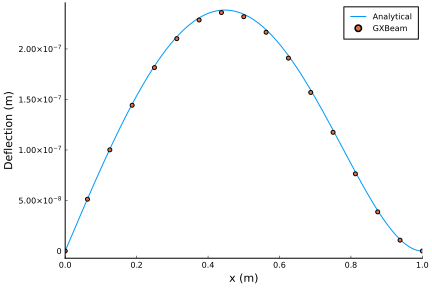
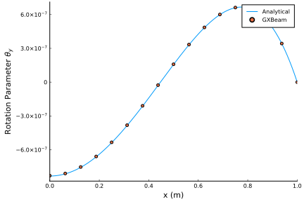
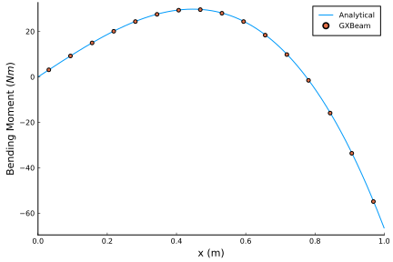
Note that we could have easily performed a nonlinear analysis for this problem by setting linear=false.
Nonlinear Analysis of a Cantilever Subjected to a Constant Tip Load
This example shows how to predict the behavior of a cantilever beam that is subjected to a constant tip load.

using GXBeam, LinearAlgebra
L = 1
EI = 1e6
# shear force (applied at end)
λ = 0:0.5:16
p = EI/L^2
P = λ*p
# create points
nelem = 16
x = range(0, L, length=nelem+1)
y = zero(x)
z = zero(x)
points = [[x[i],y[i],z[i]] for i = 1:length(x)]
# index of endpoints of each beam element
start = 1:nelem
stop = 2:nelem+1
# compliance matrix for each beam element
compliance = fill(Diagonal([0, 0, 0, 0, 1/EI, 0]), nelem)
# create assembly of interconnected nonlinear beams
assembly = Assembly(points, start, stop, compliance=compliance)
# pre-initialize system storage
system = System(assembly, true)
# run an analysis for each prescribed tip load
states = Vector{AssemblyState{Float64}}(undef, length(P))
for i = 1:length(P)
# create dictionary of prescribed conditions
prescribed_conditions = Dict(
# fixed left side
1 => PrescribedConditions(ux=0, uy=0, uz=0, theta_x=0, theta_y=0, theta_z=0),
# shear force on right tip
nelem+1 => PrescribedConditions(Fz = P[i])
)
# perform a static analysis
static_analysis!(system, assembly;
prescribed_conditions=prescribed_conditions)
# post-process the results
states[i] = AssemblyState(system, assembly;
prescribed_conditions=prescribed_conditions)
endThe analytical solution to this problem has been presented by several authors. Here we follow the solution by H. J. Barten in "On the Deflection of a Cantilever Beam", after incorporating the corrections they submitted for finding the tip angle.
import Elliptic
δ = range(pi/4, pi/2, length=10^5)[2:end-1]
k = @. cos(pi/4)/sin(δ)
λ_a = @. (Elliptic.F(pi/2, k^2) - Elliptic.F(δ, k^2))^2
θ_a = @. 2*(pi/4 - acos(k))
ξ_a = @. sqrt(2*sin(θ_a)/λ_a) .- 1
η_a = @. 1-2/sqrt(λ_a)*(Elliptic.E(pi/2, k^2) - Elliptic.E(δ, k^2))Plotting the results reveals that the analytical and computational solutions show excellent agreement.
using Plots
pyplot()
u = [states[i].points[end].u[1] for i = 1:length(P)]
θ = [states[i].points[end].theta[2] for i = 1:length(P)]
w = [states[i].points[end].u[3] for i = 1:length(P)]
# set up the plot
plot(
xlim = (0, 16),
xticks = 0:1:16,
xlabel = "Nondimensional Force \$\\left(\\frac{PL^2}{EI}\\right)\$",
ylim = (0, 1.2),
yticks = 0.0:0.2:1.2,
ylabel = "Nondimensional Tip Displacements",
grid = false,
overwrite_figure=false
)
plot!([0], [0], color=:black, label="Analytical")
scatter!([0], [0], color=:black, label="GXBeam")
plot!([0], [0], color=1, label="Vertical \$\\left(w/L\\right)\$")
plot!([0], [0], color=2, label="Horizontal \$\\left(-u/L\\right)\$")
plot!([0], [0], color=3, label="\$ \\theta/(\\pi/2) \$")
plot!(λ_a, η_a, color=1, label="")
scatter!(λ, w/L, color=1, label="")
plot!(λ_a, -ξ_a, color=2, label="")
scatter!(λ, -u/L, color=2, label="")
plot!(λ_a, θ_a*2/pi, color=3, label="")
scatter!(λ, -4*atan.(θ/4)*2/pi, color=3, label="")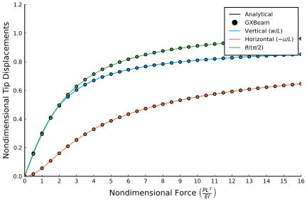
Nonlinear Analysis of a Cantilever Subjected to a Constant Moment
This example shows how to predict the behavior of a cantilever beam that is subjected to a constant tip moment. This is a common benchmark problem for the geometrically nonlinear analysis of beams.

using GXBeam, LinearAlgebra
L = 12 # inches
h = w = 1 # inches
E = 30e6 # lb/in^4 Young's Modulus
A = h*w
Iyy = w*h^3/12
Izz = w^3*h/12
# bending moment (applied at end)
λ = [0.0, 0.4, 0.8, 1.2, 1.6, 1.8, 2.0]
m = pi*E*Iyy/L
M = λ*m
# create points
nelem = 16
x = range(0, L, length=nelem+1)
y = zero(x)
z = zero(x)
points = [[x[i],y[i],z[i]] for i = 1:length(x)]
# index of endpoints of each beam element
start = 1:nelem
stop = 2:nelem+1
# compliance matrix for each beam element
compliance = fill(Diagonal([1/(E*A), 0, 0, 0, 1/(E*Iyy), 1/(E*Izz)]), nelem)
# create assembly of interconnected nonlinear beams
assembly = Assembly(points, start, stop, compliance=compliance)
# pre-initialize system storage
system = System(assembly, true)
# run an analysis for each prescribed bending moment
states = Vector{AssemblyState{Float64}}(undef, length(M))
for i = 1:length(M)
# create dictionary of prescribed conditions
prescribed_conditions = Dict(
# fixed left side
1 => PrescribedConditions(ux=0, uy=0, uz=0, theta_x=0, theta_y=0, theta_z=0),
# moment on right side
nelem+1 => PrescribedConditions(Mz = M[i])
)
# perform a static analysis
static_analysis!(system, assembly;
prescribed_conditions = prescribed_conditions)
# post-process the results
states[i] = AssemblyState(system, assembly;
prescribed_conditions = prescribed_conditions)
endThis problem has a simple analytical solution, which we obtained from "Study of the Geometric Stiffening Effect: Comparison of Different Formulations" by Juana M. Mayo, Daniel Garcia-Vallejo, and Jaime Dominguez.
# analytical solution (ρ = E*I/M)
analytical(x, ρ) = ifelse(ρ == Inf, zeros(3), [ρ*sin(x/ρ)-x, ρ*(1-cos(x/ρ)), 0])Plotting the results reveals that the analytical and computational results show excellent agreement.
using Plots
pyplot()
# set up the plot
plot(
xlim = (-0.25, 1.1),
xticks = -0.25:0.25:1.0,
xlabel = "x/L",
ylim = (-0.05, 0.8),
yticks = 0.0:0.2:0.8,
ylabel = "y/L",
aspect_ratio = 1.0,
grid = false,
overwrite_figure=false
)
# create dummy legend entries for GXBeam and Analytical
scatter!([], [], color=:black, label="GXBeam")
plot!([], [], color=:black, label="Analytical")
# plot the data
for i = 1:length(M)
# GXBeam
x = [assembly.points[ipoint][1] + states[i].points[ipoint].u[1] for ipoint =
1:length(assembly.points)]
y = [assembly.points[ipoint][2] + states[i].points[ipoint].u[2] for ipoint =
1:length(assembly.points)]
scatter!(x/L, y/L, label="", color = i)
# Analytical
x0 = range(0, L, length=100)
deflection = analytical.(x0, E*Iyy/M[i])
x = (x0 + getindex.(deflection, 1))
y = getindex.(deflection, 2)
plot!(x/L, y/L, label="λ=$(λ[i])", color=i)
end┌ Warning: Keyword argument letter not supported with Plots.PyPlotBackend(). Choose from: Set([:zforeground_color_guide, :top_margin, :group, :inset_subplots, :stride, :background_color, :ytickfontsize, :yforeground_color_text, :yguidefontcolor, :tickfontfamily, :show_empty_bins, :seriesalpha, :legendfontcolor, :seriescolor, :xrotation, :ztick_direction, :xgrid, :colorbar_tickfontfamily, :ygridalpha, :colorbar_tickfonthalign, :dpi, :zlims, :colorbar, :xtick_direction, :zflip, :ticks, :linealpha, :overwrite_figure, :arrow, :normalize, :linestyle, :xflip, :yforeground_color_guide, :zgrid, :fillcolor, :ygrid, :bar_width, :colorbar_scale, :background_color_inside, :bins, :zguide, :zforeground_color_text, :yscale, :weights, :xgridalpha, :ygridstyle, :clims, :xtickfontcolor, :fill_z, :xguide, :markershape, :background_color_subplot, :colorbar_tickfontrotation, :fillalpha, :markerstrokewidth, :tick_direction, :ztickfontfamily, :xguidefontfamily, :gridlinewidth, :foreground_color_subplot, :xgridlinewidth, :yguidefontsize, :legendfontfamily, :foreground_color, :foreground_color_text, :x, :yerror, :rotation, :zgridlinewidth, :legend, :discrete_values, :ytick_direction, :grid, :ribbon, :xguidefontsize, :xforeground_color_axis, :xdiscrete_values, :background_color_outside, :legendtitle, :titlefontcolor, :xgridstyle, :line_z, :size, :orientation, :gridstyle, :projection, :markersize, :camera, :ydiscrete_values, :xforeground_color_grid, :seriestype, :yflip, :quiver, :zticks, :markerstrokecolor, :fillrange, :colorbar_ticks, :xlims, :xforeground_color_border, :markercolor, :yrotation, :xtickfontsize, :ylink, :levels, :color_palette, :connections, :yforeground_color_grid, :lims, :zgridstyle, :foreground_color_border, :xscale, :marker_z, :markerstrokealpha, :left_margin, :markeralpha, :annotations, :window_title, :zrotation, :foreground_color_axis, :zguidefontcolor, :ygridlinewidth, :zlink, :zscale, :smooth, :colorbar_tickfontcolor, :xticks, :guidefontsize, :zguidefontsize, :y, :margin, :ytickfontcolor, :foreground_color_title, :bottom_margin, :zdiscrete_values, :yforeground_color_border, :zguidefontfamily, :framestyle, :zgridalpha, :zerror, :ztickfontcolor, :scale, :zforeground_color_border, :background_color_legend, :linecolor, :html_output_format, :yguide_position, :contours, :foreground_color_legend, :title, :tickfontcolor, :subplot_index, :flip, :xguide_position, :tickfontsize, :z, :yforeground_color_axis, :foreground_color_grid, :linewidth, :ztickfontsize, :gridalpha, :xerror, :guidefontfamily, :ylims, :bar_position, :contour_labels, :zguide_position, :xguidefontcolor, :primary, :colorbar_tickfontsize, :xtickfontfamily, :ytickfontfamily, :aspect_ratio, :xforeground_color_text, :foreground_color_guide, :show, :link, :guide_position, :colorbar_title, :legendfontsize, :xforeground_color_guide, :subplot, :label, :guide, :titlelocation, :guidefontcolor, :colorbar_tickfontvalign, :bar_edges, :yguide, :titlefontsize, :titlefont, :titlefontfamily, :zforeground_color_axis, :yguidefontfamily, :zforeground_color_grid, :layout, :colorbar_entry, :polar, :right_margin, :xlink, :series_annotations, :yticks])
└ @ Plots ~/.julia/packages/Plots/yfzIY/src/args.jl:1591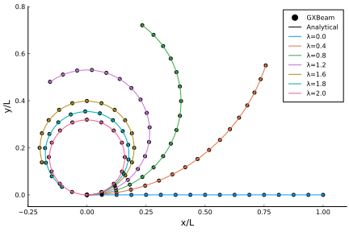
Nonlinear Analysis of the Bending of a Curved Beam in 3D Space
This example is also a common benchmark problem for the geometrically exact bending of nonlinear beams.

using GXBeam, LinearAlgebra
# problem constants
R = 100
L = R*pi/4 # inches
h = w = 1 # inches
E = 1e7 # psi Young's Modulus
ν = 0.0
G = E/(2*(1+ν))
# beam starting point, frame, and curvature
start = [0, 0, 0]
frame = [0 -1 0; 1 0 0; 0 0 1]
curvature = [0, 0, -1/R]
# cross section properties
A = h*w
Ay = A
Az = A
Iyy = w*h^3/12
Izz = w^3*h/12
J = Iyy + Izz
# discretize the beam
nelem = 16
ΔL, xp, xm, Cab = discretize_beam(L, start, nelem;
frame = frame,
curvature = curvature)
# force
P = 600 # lbs
# index of left and right endpoints of each beam element
pt1 = 1:nelem
pt2 = 2:nelem+1
# compliance matrix for each beam element
compliance = fill(Diagonal([1/(E*A), 1/(G*Ay), 1/(G*Az), 1/(G*J), 1/(E*Iyy),
1/(E*Izz)]), nelem)
# create assembly of interconnected nonlinear beams
assembly = Assembly(xp, pt1, pt2, compliance=compliance, frames=Cab,
lengths=ΔL, midpoints=xm)
# create dictionary of prescribed conditions
prescribed_conditions = Dict(
# fixed left endpoint
1 => PrescribedConditions(ux=0, uy=0, uz=0, theta_x=0, theta_y=0, theta_z=0),
# force on right endpoint
nelem+1 => PrescribedConditions(Fz = P)
)
# perform static analysis
system, converged = static_analysis(assembly;
prescribed_conditions = prescribed_conditions)
# post-process results
state = AssemblyState(system, assembly;
prescribed_conditions = prescribed_conditions)
println("Tip Displacement: ", state.points[end].u)
println("Tip Displacement (Bathe and Bolourch): [-13.4, -23.5, 53.4]")Tip Displacement: [-13.57738372680527, -23.54530333705645, 53.45800757556378]
Tip Displacement (Bathe and Bolourch): [-13.4, -23.5, 53.4]The calculated tip displacements match those reported by Bathe and Bolourch in "Large Displacement Analysis of Three-Dimensional Beam Structures" closely, thus verifying our implementation of geometrically exact beam theory.
We can visualize the deformed geometry and inspect the associated point and element data using ParaView.
write_vtk("cantilever-curved", assembly, state)
Rotating Beam with a Swept Tip
In this example we analyze a rotating beam with a swept tip. The parameters for this example come from "Finite element solution of nonlinear intrinsic equations for curved composite beams" by Hodges, Shang, and Cesnik.

using GXBeam, LinearAlgebra
sweep = 45 * pi/180
rpm = 0:25:750
# straight section of the beam
L_b1 = 31.5 # inch
r_b1 = [2.5, 0, 0]
nelem_b1 = 13
lengths_b1, xp_b1, xm_b1, Cab_b1 = discretize_beam(L_b1, r_b1, nelem_b1)
# swept section of the beam
L_b2 = 6 # inch
r_b2 = [34, 0, 0]
nelem_b2 = 3
cs, ss = cos(sweep), sin(sweep)
frame_b2 = [cs ss 0; -ss cs 0; 0 0 1]
lengths_b2, xp_b2, xm_b2, Cab_b2 = discretize_beam(L_b2, r_b2, nelem_b2;
frame = frame_b2)
# combine elements and points into one array
nelem = nelem_b1 + nelem_b2
points = vcat(xp_b1, xp_b2[2:end])
start = 1:nelem_b1 + nelem_b2
stop = 2:nelem_b1 + nelem_b2 + 1
lengths = vcat(lengths_b1, lengths_b2)
midpoints = vcat(xm_b1, xm_b2)
Cab = vcat(Cab_b1, Cab_b2)
# cross section
w = 1 # inch
h = 0.063 # inch
# material properties
E = 1.06e7 # lb/in^2
ν = 0.325
ρ = 2.51e-4 # lb sec^2/in^4
# shear and torsion correction factors
ky = 1.2000001839588001
kz = 14.625127919304001
kt = 65.85255016982444
A = h*w
Iyy = w*h^3/12
Izz = w^3*h/12
J = Iyy + Izz
# apply corrections
Ay = A/ky
Az = A/kz
Jx = J/kt
G = E/(2*(1+ν))
compliance = fill(Diagonal([1/(E*A), 1/(G*Ay), 1/(G*Az), 1/(G*Jx), 1/(E*Iyy),
1/(E*Izz)]), nelem)
mass = fill(Diagonal([ρ*A, ρ*A, ρ*A, ρ*J, ρ*Iyy, ρ*Izz]), nelem)
# create assembly
assembly = Assembly(points, start, stop;
compliance = compliance,
mass = mass,
frames = Cab,
lengths = lengths,
midpoints = midpoints)
# create dictionary of prescribed conditions
prescribed_conditions = Dict(
# root section is fixed
1 => PrescribedConditions(ux=0, uy=0, uz=0, theta_x=0, theta_y=0, theta_z=0)
)
nonlinear_states = Vector{AssemblyState{Float64}}(undef, length(rpm))
linear_states = Vector{AssemblyState{Float64}}(undef, length(rpm))
for i = 1:length(rpm)
# global frame rotation
w0 = [0, 0, rpm[i]*(2*pi)/60]
# perform nonlinear steady state analysis
system, converged = steady_state_analysis(assembly,
angular_velocity = w0,
prescribed_conditions = prescribed_conditions)
nonlinear_states[i] = AssemblyState(system, assembly;
prescribed_conditions = prescribed_conditions)
# perform linear steady state analysis
system, converged = steady_state_analysis(assembly,
angular_velocity = w0,
prescribed_conditions = prescribed_conditions,
linear = true)
linear_states[i] = AssemblyState(system, assembly;
prescribed_conditions = prescribed_conditions)
endTo visualize the solutions we will plot the root moment and tip deflections against the angular speed.
using Plots
pyplot()
# root moment
plot(
xlim = (0, 760),
xticks = 0:100:750,
xlabel = "Angular Speed (RPM)",
yticks = 0.0:2:12,
ylabel = "\$M_z\$ at the root (lb-in)",
grid = false,
overwrite_figure=false
)
Mz_nl = [-nonlinear_states[i].points[1].M[3] for i = 1:length(rpm)]
Mz_l = [-linear_states[i].points[1].M[3] for i = 1:length(rpm)]
plot!(rpm, Mz_nl, label="Nonlinear")
plot!(rpm, Mz_l, label="Linear")
# x tip deflection
plot(
xlim = (0, 760),
xticks = 0:100:750,
xlabel = "Angular Speed (RPM)",
ylim = (-0.002, 0.074),
yticks = 0.0:0.01:0.07,
ylabel = "\$u_x\$ at the tip (in)",
grid = false,
overwrite_figure=false
)
ux_nl = [nonlinear_states[i].points[end].u[1] for i = 1:length(rpm)]
ux_l = [linear_states[i].points[end].u[1] for i = 1:length(rpm)]
plot!(rpm, ux_nl, label="Nonlinear")
plot!(rpm, ux_l, label="Linear")
# y tip deflection
plot(
xlim = (0, 760),
xticks = 0:100:750,
xlabel = "Angular Speed (RPM)",
ylim = (-0.01, 0.27),
yticks = 0.0:0.05:0.25,
ylabel = "\$u_y\$ at the tip (in)",
grid = false,
overwrite_figure=false
)
uy_nl = [nonlinear_states[i].points[end].u[2] for i = 1:length(rpm)]
uy_l = [linear_states[i].points[end].u[2] for i = 1:length(rpm)]
plot!(rpm, uy_nl, label="Nonlinear")
plot!(rpm, uy_l, label="Linear")
# rotation of the tip
plot(
xlim = (0, 760),
xticks = 0:100:750,
xlabel = "Angular Speed (RPM)",
ylabel = "\$θ_z\$ at the tip",
grid = false,
overwrite_figure=false
)
theta_z_nl = [4*atan(nonlinear_states[i].points[end].theta[3]/4)
for i = 1:length(rpm)]
theta_z_l = [4*atan(linear_states[i].points[end].theta[3]/4)
for i = 1:length(rpm)]
plot!(rpm, theta_z_nl, label="Nonlinear")
plot!(rpm, theta_z_l, label="Linear")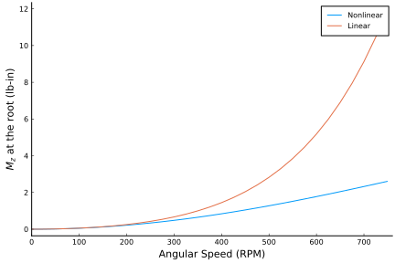 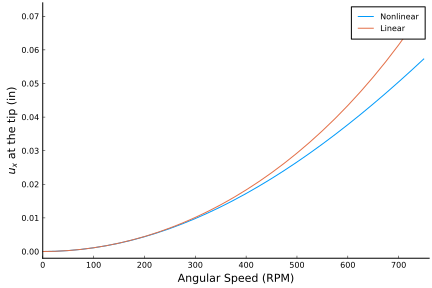 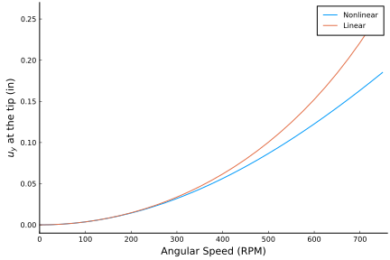 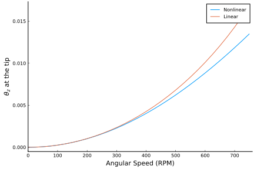
We will now compute the eigenvalues of this system for a range of sweep angles and and angular speeds.
sweep = (0:2.5:45) * pi/180
rpm = [0, 500, 750]
nev = 30
λ = Matrix{Vector{ComplexF64}}(undef, length(sweep), length(rpm))
U = Matrix{Matrix{ComplexF64}}(undef, length(sweep), length(rpm))
MV = Matrix{Matrix{ComplexF64}}(undef, length(sweep), length(rpm))
state = Matrix{AssemblyState{Float64}}(undef, length(sweep), length(rpm))
eigenstates = Matrix{Vector{AssemblyState{ComplexF64}}}(undef,
length(sweep), length(rpm))
for i = 1:length(sweep)
# straight section of the beam
L_b1 = 31.5 # inch
r_b1 = [2.5, 0, 0]
nelem_b1 = 20
lengths_b1, xp_b1, xm_b1, Cab_b1 = discretize_beam(L_b1, r_b1, nelem_b1)
# swept section of the beam
L_b2 = 6 # inch
r_b2 = [34, 0, 0]
nelem_b2 = 20
cs, ss = cos(sweep[i]), sin(sweep[i])
frame_b2 = [cs ss 0; -ss cs 0; 0 0 1]
lengths_b2, xp_b2, xm_b2, Cab_b2 = discretize_beam(L_b2, r_b2, nelem_b2;
frame = frame_b2)
# combine elements and points into one array
nelem = nelem_b1 + nelem_b2
points = vcat(xp_b1, xp_b2[2:end])
start = 1:nelem_b1 + nelem_b2
stop = 2:nelem_b1 + nelem_b2 + 1
lengths = vcat(lengths_b1, lengths_b2)
midpoints = vcat(xm_b1, xm_b2)
Cab = vcat(Cab_b1, Cab_b2)
compliance = fill(Diagonal([1/(E*A), 1/(G*Ay), 1/(G*Az), 1/(G*Jx),
1/(E*Iyy), 1/(E*Izz)]), nelem)
mass = fill(Diagonal([ρ*A, ρ*A, ρ*A, ρ*J, ρ*Iyy, ρ*Izz]), nelem)
# create assembly
assembly = Assembly(points, start, stop;
compliance = compliance,
mass = mass,
frames = Cab,
lengths = lengths,
midpoints = midpoints)
# create system
system = System(assembly, false)
for j = 1:length(rpm)
# global frame rotation
w0 = [0, 0, rpm[j]*(2*pi)/60]
# eigenvalues and (right) eigenvectors
system, λ[i,j], V, converged = eigenvalue_analysis!(system, assembly;
angular_velocity = w0,
prescribed_conditions = prescribed_conditions,
nev = nev)
# corresponding left eigenvectors
U[i,j] = left_eigenvectors(system, λ[i,j], V)
# post-multiply mass matrix with right eigenvector matrix
# (we use this later for correlating eigenvalues)
MV[i,j] = system.M * V
# process state and eigenstates
state[i,j] = AssemblyState(system, assembly;
prescribed_conditions = prescribed_conditions)
eigenstates[i,j] = [AssemblyState(system, assembly, V[:,k];
prescribed_conditions = prescribed_conditions) for k = 1:nev]
end
endWe can correlate each eigenmode by taking advantage of the fact that left and right eigenvectors satisfy the following relationships:
\[\begin{aligned} u^H M v &= 1 &\text{if \(u\) and \(v\) correspond to the same eigenmode} \\ u^H M v &= 0 &\text{if \(u\) and \(v\) correspond to different eigenmodes} \end{aligned}\]
# set previous left eigenvector matrix
U_p = copy(U[1,1])
for j = 1:length(rpm)
for i = 1:length(sweep)
# construct correlation matrix
C = U_p*MV[i,j]
# correlate eigenmodes
perm, corruption = correlate_eigenmodes(C)
# re-arrange eigenvalues and eigenvectors
λ[i,j] = λ[i,j][perm]
U[i,j] = U[i,j][perm,:]
MV[i,j] = MV[i,j][:,perm]
eigenstates[i,j] = eigenstates[i,j][perm]
# update previous eigenvector matrix
U_p .= U[i,j]
end
# update previous eigenvector matrix
U_p .= U[1,j]
end
frequency = [[imag(λ[i,j][k])/(2*pi) for i = 1:length(sweep), j=1:length(rpm)]
for k = 1:2:nev]In this case these eigenmode correlations work, but remember that large changes in the underlying parameters (or just drastic changes in the eigenvectors themselves due to a small perturbation) can cause these automatic eigenmode correlations to fail.
We'll now plot the frequency of the different eigenmodes against those found by Epps and Chandra in "The Natural Frequencies of Rotating Composite Beams With Tip Sweep".
names = ["First Bending Mode", "Second Bending Mode", "Third Bending Mode"]
indices = [1, 2, 4]
experiment_rpm = [0, 500, 750]
experiment_sweep = [0, 15, 30, 45]
experiment_frequencies = [
[1.4 1.8 1.7 1.6;
10.2 10.1 10.2 10.2;
14.8 14.4 14.9 14.7],
[10.3 10.2 10.4 10.4;
25.2 25.2 23.7 21.6;
36.1 34.8 30.7 26.1],
[27.7 27.2 26.6 24.8;
47.0 44.4 39.3 35.1;
62.9 55.9 48.6 44.8]
]
plot!([], [], color=:black, label="GXBeam")
scatter!([], [], color=:black, label = "Experiment (Epps and Chandra)")
for k = 1:length(indices)
plot(
title = names[k],
xticks = 0:15:45,
xlabel = "Sweep Angle (degrees)",
ylim = (0, Inf),
ylabel = "Frequency (Hz)",
grid = false,
overwrite_figure=false
)
for j = length(rpm):-1:1
plot!(sweep*180/pi, frequency[indices[k]][:,j],
label="$(rpm[j]) RPM", color=j)
scatter!(experiment_sweep, experiment_frequencies[k][j,:],
label="", color=j)
end
plot!(show=true)
end
names = ["1T/5B", "5B/1T", "4B/1T"]
indices = [5, 7, 6]
experiment_frequencies = [
132.7 147.3 166.2 162.0
106.6 120.1 122.6 117.7;
95.4 87.5 83.7 78.8;
]
plot(
title = "Coupled Torsion-Bending Modes at 750 RPM",
xticks = 0:15:45,
xlabel = "Sweep Angle (degrees)",
ylim = (0, Inf),
ylabel = "Frequency (Hz)",
legend = :bottomleft,
grid = false,
overwrite_figure=false
)
plot!([], [], color=:black, label="GXBeam")
scatter!([], [], color=:black,
label="Experiment (Epps and Chandra)")
for k = 1:length(indices)
plot!(sweep*180/pi, frequency[indices[k]][:,end], label=names[k], color=k)
scatter!(experiment_sweep, experiment_frequencies[k,:],
label="", color=k)
end
plot!(show=true)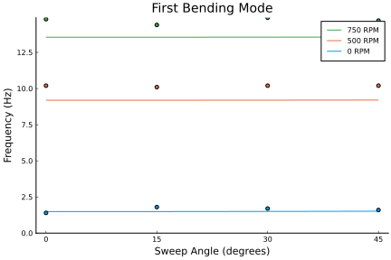 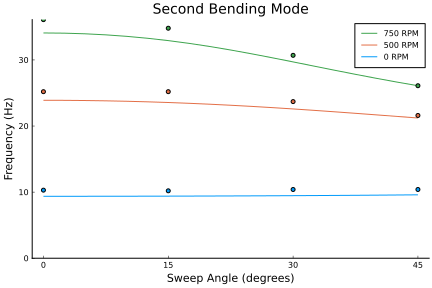 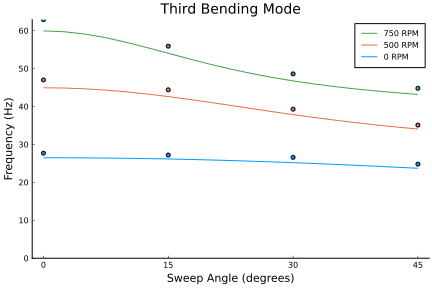 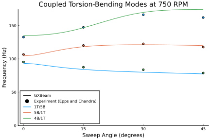
As you can see, the frequency results from the eigenmode analysis in this package compare well with experimental results.
We can also visualize eigenmodes using ParaView. Here we will visualize the first bending mode for the 45 degree swept tip at a rotational speed of 750 RPM. This can be helpful for identifying different eigenmodes.
# write the response to vtk files for visualization using ParaView
write_vtk("rotating-beam-45d-750rpm-bending-mode-1", assembly, state[end,end],
λ[end,end][1], eigenstates[end,end][1]; sections = sections,
mode_scaling = 100.0)
Nonlinear Dynamic Analysis of a Wind Turbine Blade
using GXBeam, LinearAlgebra
L = 60 # m
# create points
nelem = 10
x = range(0, L, length=nelem+1)
y = zero(x)
z = zero(x)
points = [[x[i],y[i],z[i]] for i = 1:length(x)]
# index of endpoints of each beam element
start = 1:nelem
stop = 2:nelem+1
# stiffness matrix for each beam element
stiffness = fill(
[2.389e9 1.524e6 6.734e6 -3.382e7 -2.627e7 -4.736e8
1.524e6 4.334e8 -3.741e6 -2.935e5 1.527e7 3.835e5
6.734e6 -3.741e6 2.743e7 -4.592e5 -6.869e5 -4.742e6
-3.382e7 -2.935e5 -4.592e5 2.167e7 -6.279e5 1.430e6
-2.627e7 1.527e7 -6.869e5 -6.279e5 1.970e7 1.209e7
-4.736e8 3.835e5 -4.742e6 1.430e6 1.209e7 4.406e8],
nelem)
# mass matrix for each beam element
mass = fill(
[258.053 0.0 0.0 0.0 7.07839 -71.6871
0.0 258.053 0.0 -7.07839 0.0 0.0
0.0 0.0 258.053 71.6871 0.0 0.0
0.0 -7.07839 71.6871 48.59 0.0 0.0
7.07839 0.0 0.0 0.0 2.172 0.0
-71.6871 0.0 0.0 0.0 0.0 46.418],
nelem)
# create assembly of interconnected nonlinear beams
assembly = Assembly(points, start, stop; stiffness=stiffness, mass=mass)
# prescribed conditions
prescribed_conditions = (t) -> begin
Dict(
# fixed left side
1 => PrescribedConditions(ux=0, uy=0, uz=0, theta_x=0, theta_y=0, theta_z=0),
# force on right side
nelem+1 => PrescribedConditions(Fz = 1e5*sin(20*t))
)
end
# simulation time
t = 0:0.001:2.0
system, history, converged = time_domain_analysis(assembly, t;
prescribed_conditions = prescribed_conditions)We can visualize tip displacements and the resultant forces in the root by accessing the post-processed results for each time step contained in the variable history. Note that the root resultant forces for this case are equal to the external forces/moments, but with opposite sign.
using Plots
pyplot()
point = vcat(fill(nelem+1, 6), fill(1, 6))
field = [:u, :u, :u, :theta, :theta, :theta, :F, :F, :F, :M, :M, :M]
direction = [1, 2, 3, 1, 2, 3, 1, 2, 3, 1, 2, 3]
ylabel = ["\$u_x\$ (\$m\$)", "\$u_y\$ (\$m\$)", "\$u_z\$ (\$m\$)",
"Rodriguez Parameter \$\\theta_x\$ (degree)",
"Rodriguez Parameter \$\\theta_y\$ (degree)",
"Rodriguez Parameter \$\\theta_z\$ (degree)",
"\$F_x\$ (\$N\$)", "\$F_y\$ (\$N\$)", "\$F_z\$ (\$N\$)",
"\$M_x\$ (\$Nm\$)", "\$M_y\$ (\$Nm\$)", "\$M_z\$ (\$N\$)"]
for i = 1:12
plot(
xlim = (0, 2.0),
xticks = 0:0.5:2.0,
xlabel = "Time (s)",
ylabel = ylabel[i],
grid = false,
overwrite_figure=false
)
y = [getproperty(state.points[point[i]], field[i])[direction[i]]
for state in history]
if field[i] == :theta
# convert to Rodriguez parameter
@. y = 4*atan(y/4)
# convert to degrees
@. y = rad2deg(y)
end
if field[i] == :F || field[i] == :M
y = -y
end
plot!(t, y, label="")
plot!(show=true)
end 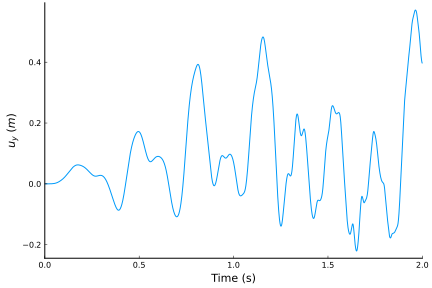 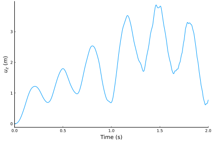 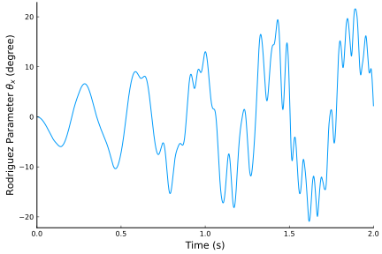 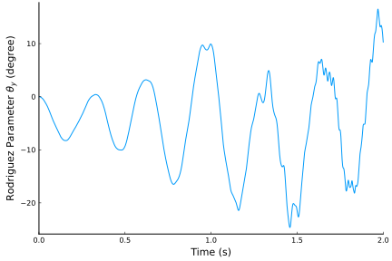 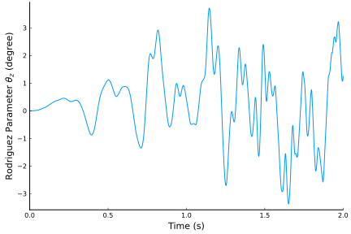 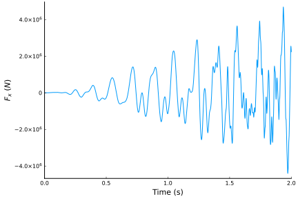 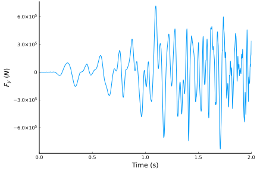 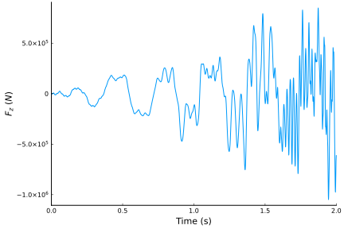 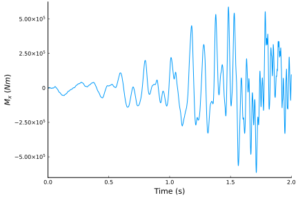 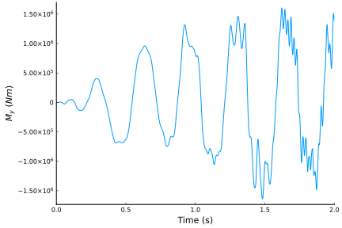 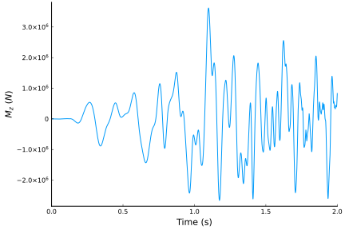
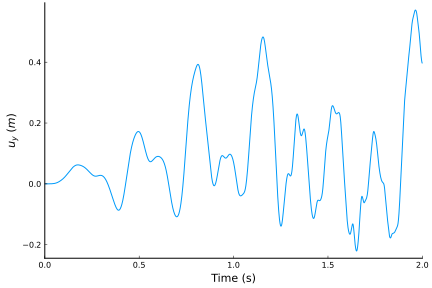 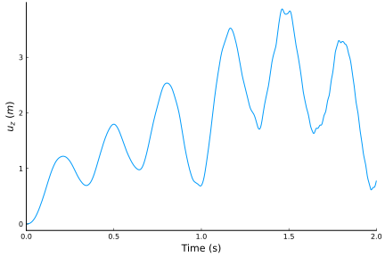 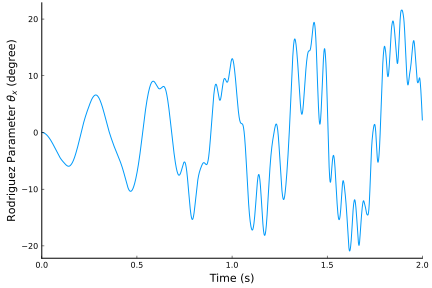 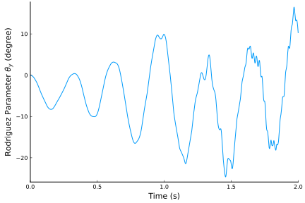 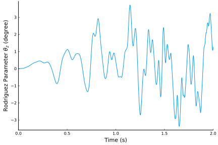 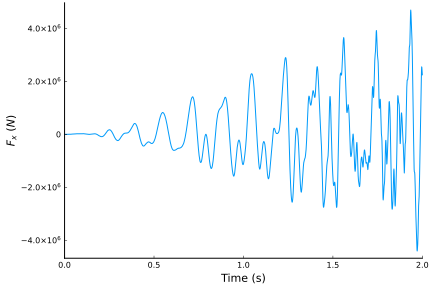 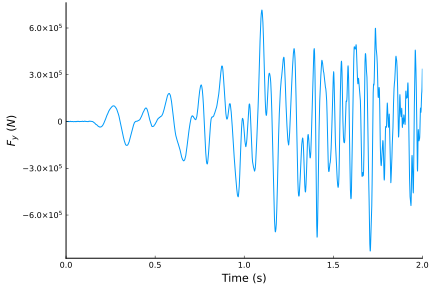 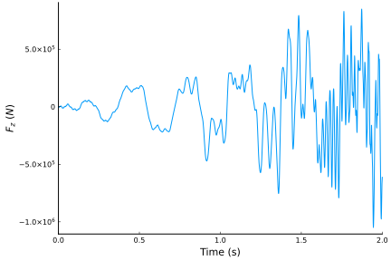 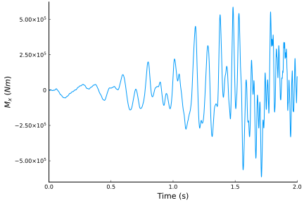 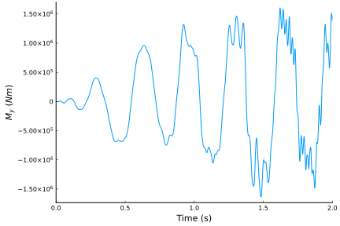 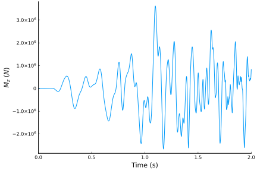
These plots are identical to those presented by Qi Wang, Wenbin Yu, and Michael A. Sprague in "Geometric Nonlinear Analysis of Composite Beams Using Wiener-Milenkovic Parameters".
We can also visualize the time history of the system using ParaView.
root_chord = 1.9000
tip_chord = 0.4540
airfoil = [ # MH-104
1.00000000 0.00000000;
0.99619582 0.00017047;
0.98515158 0.00100213;
0.96764209 0.00285474;
0.94421447 0.00556001;
0.91510964 0.00906779;
0.88074158 0.01357364;
0.84177999 0.01916802;
0.79894110 0.02580144;
0.75297076 0.03334313;
0.70461763 0.04158593;
0.65461515 0.05026338;
0.60366461 0.05906756;
0.55242353 0.06766426;
0.50149950 0.07571157;
0.45144530 0.08287416;
0.40276150 0.08882939;
0.35589801 0.09329359;
0.31131449 0.09592864;
0.26917194 0.09626763;
0.22927064 0.09424396;
0.19167283 0.09023579;
0.15672257 0.08451656;
0.12469599 0.07727756;
0.09585870 0.06875796;
0.07046974 0.05918984;
0.04874337 0.04880096;
0.03081405 0.03786904;
0.01681379 0.02676332;
0.00687971 0.01592385;
0.00143518 0.00647946;
0.00053606 0.00370956;
0.00006572 0.00112514;
0.00001249 -0.00046881;
0.00023032 -0.00191488;
0.00079945 -0.00329201;
0.00170287 -0.00470585;
0.00354717 -0.00688469;
0.00592084 -0.00912202;
0.01810144 -0.01720842;
0.03471169 -0.02488211;
0.05589286 -0.03226730;
0.08132751 -0.03908459;
0.11073805 -0.04503763;
0.14391397 -0.04986836;
0.18067874 -0.05338180;
0.22089879 -0.05551392;
0.26433734 -0.05636585;
0.31062190 -0.05605816;
0.35933893 -0.05472399;
0.40999990 -0.05254383;
0.46204424 -0.04969990;
0.51483073 -0.04637175;
0.56767889 -0.04264894;
0.61998250 -0.03859653;
0.67114514 -0.03433153;
0.72054815 -0.02996944;
0.76758733 -0.02560890;
0.81168064 -0.02134397;
0.85227225 -0.01726049;
0.88883823 -0.01343567;
0.92088961 -0.00993849;
0.94797259 -0.00679919;
0.96977487 -0.00402321;
0.98607009 -0.00180118;
0.99640466 -0.00044469;
1.00000000 0.00000000;
]
sections = zeros(3, size(airfoil, 1), length(points))
for ip = 1:length(points)
chord = root_chord * (1 - x[ip]/L) + tip_chord * x[ip]/L
sections[1, :, ip] .= 0
sections[2, :, ip] .= chord .* (airfoil[:,1] .- 0.5)
sections[3, :, ip] .= chord .* airfoil[:,2]
end
write_vtk("dynamic-wind-turbine", assembly, history, t; sections = sections)
Nonlinear Static Analysis of a Joined-Wing
In this example we analyze joined-wing model proposed by Blair in "An Equivalent Beam Formulation for Joined-Wings in a Post-Buckled State" and optimized by Green et al. in "Structural Optimization of Joined-Wing Beam Model with Bend-Twist Coupling using Equivalent Static Loads".

using GXBeam, LinearAlgebra
# Set endpoints of each beam
p1 = [-7.1726, -12, -3.21539]
p2 = [-5.37945, -9, -2.41154]
p3 = [-3.5863, -6, -1.6077]
p4 = [-1.79315, -3, -0.803848]
p5 = [0, 0, 0]
p6 = [7.1726, -12, 3.21539]
# get transformation matrix for left beams
# transformation from intermediate frame to global frame
tmp1 = sqrt(p1[1]^2 + p1[2]^2)
c1, s1 = -p1[1]/tmp1, -p1[2]/tmp1
rot1 = [c1 -s1 0; s1 c1 0; 0 0 1]
# transformation from local beam frame to intermediate frame
tmp2 = sqrt(p1[1]^2 + p1[2]^2 + p1[3]^2)
c2, s2 = tmp1/tmp2, -p1[3]/tmp2
rot2 = [c2 0 -s2; 0 1 0; s2 0 c2]
Cab_1 = rot1*rot2
# get transformation matrix for right beam
# transformation from intermediate frame to global frame
tmp1 = sqrt(p6[1]^2 + p6[2]^2)
c1, s1 = p6[1]/tmp1, p6[2]/tmp1
rot1 = [c1 -s1 0; s1 c1 0; 0 0 1]
# transformation from local beam frame to intermediate frame
tmp2 = sqrt(p6[1]^2 + p6[2]^2 + p6[3]^2)
c2, s2 = tmp1/tmp2, p6[3]/tmp2
rot2 = [c2 0 -s2; 0 1 0; s2 0 c2]
Cab_2 = rot1*rot2
# beam 1
L_b1 = norm(p2-p1)
r_b1 = p1
nelem_b1 = 5
lengths_b1, xp_b1, xm_b1, Cab_b1 = discretize_beam(L_b1, r_b1, nelem_b1;
frame = Cab_1)
compliance_b1 = fill(Diagonal([1.05204e-9, 3.19659e-9, 2.13106e-8, 1.15475e-7,
1.52885e-7, 7.1672e-9]), nelem_b1)
# beam 2
L_b2 = norm(p3-p2)
r_b2 = p2
nelem_b2 = 5
lengths_b2, xp_b2, xm_b2, Cab_b2 = discretize_beam(L_b2, r_b2, nelem_b2;
frame = Cab_1)
compliance_b2 = fill(Diagonal([1.24467e-9, 3.77682e-9, 2.51788e-8, 1.90461e-7,
2.55034e-7, 1.18646e-8]), nelem_b2)
# beam 3
L_b3 = norm(p4-p3)
r_b3 = p3
nelem_b3 = 5
lengths_b3, xp_b3, xm_b3, Cab_b3 = discretize_beam(L_b3, r_b3, nelem_b3;
frame = Cab_1)
compliance_b3 = fill(Diagonal([1.60806e-9, 4.86724e-9, 3.24482e-8, 4.07637e-7,
5.57611e-7, 2.55684e-8]), nelem_b3)
# beam 4
L_b4 = norm(p5-p4)
r_b4 = p4
nelem_b4 = 5
lengths_b4, xp_b4, xm_b4, Cab_b4 = discretize_beam(L_b4, r_b4, nelem_b4;
frame = Cab_1)
compliance_b4 = fill(Diagonal([2.56482e-9, 7.60456e-9, 5.67609e-8, 1.92171e-6,
2.8757e-6, 1.02718e-7]), nelem_b4)
# beam 5
L_b5 = norm(p6-p5)
r_b5 = p5
nelem_b5 = 20
lengths_b5, xp_b5, xm_b5, Cab_b5 = discretize_beam(L_b5, r_b5, nelem_b5;
frame = Cab_2)
compliance_b5 = fill(Diagonal([2.77393e-9, 7.60456e-9, 1.52091e-7, 1.27757e-5,
2.7835e-5, 1.26026e-7]), nelem_b5)
# combine elements and points into one array
nelem = nelem_b1 + nelem_b2 + nelem_b3 + nelem_b4 + nelem_b5
points = vcat(xp_b1, xp_b2[2:end], xp_b3[2:end], xp_b4[2:end], xp_b5[2:end])
start = 1:nelem
stop = 2:nelem + 1
lengths = vcat(lengths_b1, lengths_b2, lengths_b3, lengths_b4, lengths_b5)
midpoints = vcat(xm_b1, xm_b2, xm_b3, xm_b4, xm_b5)
Cab = vcat(Cab_b1, Cab_b2, Cab_b3, Cab_b4, Cab_b5)
compliance = vcat(compliance_b1, compliance_b2, compliance_b3, compliance_b4,
compliance_b5)
# create assembly
assembly = Assembly(points, start, stop;
compliance = compliance,
frames = Cab,
lengths = lengths,
midpoints = midpoints)
Fz = range(0, 70e3, length=141)
# pre-allocate memory to reduce run-time
ijoint = nelem_b1 + nelem_b2 + nelem_b3 + nelem_b4 + 1
prescribed_points = [1, ijoint, nelem+1]
static = true
system = System(assembly, static; prescribed_points)
linear_states = Vector{AssemblyState{Float64}}(undef, length(Fz))
for i = 1:length(Fz)
# create dictionary of prescribed conditions
prescribed_conditions = Dict(
# fixed endpoint on beam 1
1 => PrescribedConditions(ux=0, uy=0, uz=0, theta_x=0, theta_y=0,
theta_z=0),
# force applied on point 4
nelem_b1 + nelem_b2 + nelem_b3 + nelem_b4 + 1 => PrescribedConditions(
Fz = Fz[i]),
# fixed endpoint on last beam
nelem+1 => PrescribedConditions(ux=0, uy=0, uz=0, theta_x=0, theta_y=0,
theta_z=0),
)
static_analysis!(system, assembly;
prescribed_conditions = prescribed_conditions,
linear = true)
linear_states[i] = AssemblyState(system, assembly;
prescribed_conditions = prescribed_conditions)
end
reset_state!(system)
nonlinear_states = Vector{AssemblyState{Float64}}(undef, length(Fz))
for i = 1:length(Fz)
# create dictionary of prescribed conditions
prescribed_conditions = Dict(
# fixed endpoint on beam 1
1 => PrescribedConditions(ux=0, uy=0, uz=0, theta_x=0, theta_y=0,
theta_z=0),
# force applied on point 4
nelem_b1 + nelem_b2 + nelem_b3 + nelem_b4 + 1 => PrescribedConditions(
Fz = Fz[i]),
# fixed endpoint on last beam
nelem+1 => PrescribedConditions(ux=0, uy=0, uz=0, theta_x=0, theta_y=0,
theta_z=0),
)
static_analysis!(system, assembly;
prescribed_conditions=prescribed_conditions, reset_state=false)
nonlinear_states[i] = AssemblyState(system, assembly;
prescribed_conditions = prescribed_conditions)
end
reset_state!(system)
nonlinear_follower_states = Vector{AssemblyState{Float64}}(undef, length(Fz))
for i = 1:length(Fz)
# create dictionary of prescribed conditions
prescribed_conditions = Dict(
# fixed endpoint on beam 1
1 => PrescribedConditions(ux=0, uy=0, uz=0, theta_x=0, theta_y=0,
theta_z=0),
# force applied on point 4
nelem_b1 + nelem_b2 + nelem_b3 + nelem_b4 + 1 => PrescribedConditions(
Fz_follower = Fz[i]),
# fixed endpoint on last beam
nelem+1 => PrescribedConditions(ux=0, uy=0, uz=0, theta_x=0, theta_y=0,
theta_z=0),
)
static_analysis!(system, assembly;
prescribed_conditions=prescribed_conditions, reset_state=false)
nonlinear_follower_states[i] = AssemblyState(system, assembly;
prescribed_conditions = prescribed_conditions)
endNote that we incrementally increased the load from 0 to 70 kN in order to ensure that we obtained converged solutions.
To visualize the differences between the different types of analyses we can plot the load deflection curve.
using Plots
pyplot()
plot(
xlim = (0, 7),
xticks = 0:1:7,
xlabel = "Vertical Displacement at the Joint (m)",
yticks = 0:10:70,
ylim = (0, 70),
ylabel = "Load (kN)",
grid = false,
overwrite_figure=false
)
uz_l = [linear_states[i].points[ijoint].u[3] for i = 1:length(Fz)]
uz_nl = [nonlinear_states[i].points[ijoint].u[3] for i = 1:length(Fz)]
uz_fnl = [nonlinear_follower_states[i].points[ijoint].u[3] for i = 1:length(Fz)]
plot!(uz_l, Fz./1e3, label="Linear")
plot!(uz_nl, Fz./1e3, label="Nonlinear with Dead Force")
plot!(uz_fnl, Fz./1e3, label="Nonlinear with Follower Force")This plot matches the plot provided by Wenbin Yu in "GEBT: A general-purpose nonlinear analysis tool for composite beams".
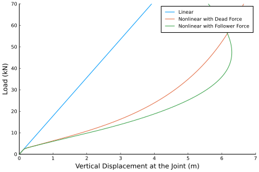
We can also visualize the deformed geometry and inspect the associated point and element data for any of these operating conditions conditions using ParaView. To demonstrate we will visualize the 70kN follower force condition and set the color gradient to match the magnitude of the deflections.
airfoil = [ #FX 60-100 airfoil
0.0000000 0.0000000;
0.0010700 0.0057400;
0.0042800 0.0114400;
0.0096100 0.0177500;
0.0170400 0.0236800;
0.0265300 0.0294800;
0.0380600 0.0352300;
0.0515600 0.0405600;
0.0669900 0.0460900;
0.0842700 0.0508600;
0.1033200 0.0556900;
0.1240800 0.0598900;
0.1464500 0.0640400;
0.1703300 0.0675400;
0.1956200 0.0708100;
0.2222100 0.0733900;
0.2500000 0.0756500;
0.2788600 0.0772000;
0.3086600 0.0783800;
0.3392800 0.0788800;
0.3705900 0.0789800;
0.4024500 0.0784500;
0.4347400 0.0775000;
0.4673000 0.0759600;
0.5000000 0.0740900;
0.5327000 0.0717400;
0.5652600 0.0691100;
0.5975500 0.0660800;
0.6294100 0.0627500;
0.6607200 0.0590500;
0.6913400 0.0551100;
0.7211400 0.0508900;
0.7500000 0.0465200;
0.7777900 0.0420000;
0.8043801 0.0374700;
0.8296700 0.0329800;
0.8535500 0.0286400;
0.8759201 0.0244700;
0.8966800 0.0205300;
0.9157300 0.0168100;
0.9330100 0.0134200;
0.9484400 0.0103500;
0.9619400 0.0076600;
0.9734700 0.0053400;
0.9829600 0.0034100;
0.9903900 0.0019300;
0.9957200 0.0008600;
0.9989300 0.0002300;
1.0000000 0.0000000;
0.9989300 0.0001500;
0.9957200 0.0007000;
0.9903900 0.0015100;
0.9829600 0.00251;
0.9734700 0.00377;
0.9619400 0.00515;
0.9484400 0.00659;
0.9330100 0.00802;
0.9157300 0.00941;
0.8966800 0.01072;
0.8759201 0.01186;
0.8535500 0.0128;
0.8296700 0.01347;
0.8043801 0.01381;
0.7777900 0.01373;
0.7500000 0.01329;
0.7211400 0.01241;
0.6913400 0.01118;
0.6607200 0.00951;
0.6294100 0.00748;
0.5975500 0.00496;
0.5652600 0.00217;
0.532700 -0.00092;
0.500000 -0.00405;
0.467300 -0.00731;
0.434740 -0.01045;
0.402450 -0.01357;
0.370590 -0.01637;
0.339280 -0.01895;
0.308660 -0.021;
0.278860 -0.02275;
0.250000 -0.02389;
0.222210 -0.02475;
0.195620 -0.025;
0.170330 -0.02503;
0.146450 -0.02447;
0.124080 -0.02377;
0.103320 -0.02246;
0.084270 -0.0211;
0.066990 -0.01913;
0.051560 -0.0173;
0.038060 -0.01481;
0.026530 -0.01247;
0.017040 -0.0097;
0.009610 -0.00691;
0.004280 -0.00436;
0.001070 -0.002;
0.0 0.0;
]
section = zeros(3, size(airfoil, 1))
for ic = 1:size(airfoil, 1)
section[1,ic] = airfoil[ic,1] - 0.5
section[2,ic] = 0
section[3,ic] = airfoil[ic,2]
end
write_vtk("static-joined-wing", assembly, nonlinear_follower_states[end];
sections = section)
Nonlinear Dynamic Analysis of a Joined-Wing
In this example we use the same joined-wing model as used in the previous example, but with the following time varying loads applied at the wingtip:
- A piecewise-linear load $F_L$ in the x and y-directions defined as follows:
\[F_L(t) = \begin{cases} t10^6 \text{ N} & 0 \leq t \leq 0.01 \\ (0.02-t)10^6 & 0.01 \leq t \leq 0.02 \\ 0 & \text{otherwise} \end{cases}\]
- A sinusoidal load $F_S$ applied in the z-direction defined as follows:
\[F_S(t) = \begin{cases} 0 & t \lt 0 \\ 5 \times 10^3 (1-\cos(\pi t /0.02)) \text{ N} & 0 \leq t \lt 0.02 \\ 10^4 \text{ N} & 0.02 \leq t \end{cases}\]
We will also use the same compliance and mass matrix for all beams, in order to simplify the problem definition.
using GXBeam, LinearAlgebra
# Set endpoints of each beam
p1 = [0, 0, 0]
p2 = [-7.1726, -12, -3.21539]
p3 = [7.1726, -12, 3.21539]
Cab_1 = [
0.5 0.866025 0.0
0.836516 -0.482963 0.258819
0.224144 -0.12941 -0.965926
]
Cab_2 = [
0.5 0.866025 0.0
-0.836516 0.482963 0.258819
0.224144 -0.12941 0.965926
]
# beam 1
L_b1 = norm(p1-p2)
r_b1 = p2
nelem_b1 = 8
lengths_b1, xp_b1, xm_b1, Cab_b1 = discretize_beam(L_b1, r_b1, nelem_b1, frame=Cab_1)
# beam 2
L_b2 = norm(p3-p1)
r_b2 = p1
nelem_b2 = 8
lengths_b2, xp_b2, xm_b2, Cab_b2 = discretize_beam(L_b2, r_b2, nelem_b2, frame=Cab_2)
# combine elements and points into one array
nelem = nelem_b1 + nelem_b2
points = vcat(xp_b1, xp_b2[2:end])
start = 1:nelem
stop = 2:nelem + 1
lengths = vcat(lengths_b1, lengths_b2)
midpoints = vcat(xm_b1, xm_b2)
Cab = vcat(Cab_b1, Cab_b2)
# assign all beams the same compliance and mass matrix
compliance = fill(Diagonal([2.93944738387698e-10, 8.42991725049126e-10,
3.38313996669689e-08, 4.69246721094557e-08, 6.79584100559513e-08,
1.37068861370898e-09]), nelem)
mass = fill(Diagonal([4.86e-2, 4.86e-2, 4.86e-2, 1.0632465e-2, 2.10195e-4,
1.042227e-2]), nelem)
# create assembly
assembly = Assembly(points, start, stop;
compliance = compliance,
mass = mass,
frames = Cab,
lengths = lengths,
midpoints = midpoints)
F_L = (t) -> begin
if 0.0 <= t < 0.01
1e6*t
elseif 0.01 <= t < 0.02
-1e6*(t-0.02)
else
zero(t)
end
end
F_S = (t) -> begin
if t < 0.0
zero(t)
elseif 0.0 <= t < 0.02
5e3*(1-cos(pi*t/0.02))
else
1e4
end
end
# assign boundary conditions and point load
prescribed_conditions = (t) -> begin
Dict(
# fixed endpoint on beam 1
1 => PrescribedConditions(ux=0, uy=0, uz=0, theta_x=0, theta_y=0, theta_z=0),
# force applied on point 4
nelem_b1 + 1 => PrescribedConditions(Fx=F_L(t), Fy=F_L(t), Fz=F_S(t)),
# fixed endpoint on last beam
nelem+1 => PrescribedConditions(ux=0, uy=0, uz=0, theta_x=0, theta_y=0, theta_z=0),
)
end
# time
t = range(0, 0.04, length=1001)
system, history, converged = time_domain_analysis(assembly, t;
prescribed_conditions=prescribed_conditions)We can visualize tip displacements and the resultant forces accessing the post-processed results for each time step contained in the variable history. Note that the fore-root and rear-root resultant forces for this case are equal to the external forces/moments, but with opposite sign.
using Plots
pyplot()
point = vcat(fill(nelem_b1+1, 6), fill(1, 6))
field = [:u, :u, :u, :theta, :theta, :theta, :F, :F, :F, :M, :M, :M]
direction = [1, 2, 3, 1, 2, 3, 1, 2, 3, 1, 2, 3]
ylabel = ["\$u_x\$ (\$m\$)", "\$u_y\$ (\$m\$)", "\$u_z\$ (\$m\$)",
"Rodriguez Parameter \$\\theta_x\$", "Rodriguez Parameter \$\\theta_y\$",
"Rodriguez Parameter \$\\theta_z\$", "\$F_x\$ at the forewing root (\$N\$)",
"\$F_y\$ at the forewing root (\$N\$)", "\$F_z\$ at the forewing root (\$N\$)",
"\$M_x\$ at the forewing root (\$Nm\$)", "\$M_y\$ at the forewing root (\$Nm\$)",
"\$M_z\$ at the forewing root (\$N\$)"]
for i = 1:12
plot(
xlim = (0, 0.04),
xticks = 0:0.01:0.04,
xlabel = "Time (s)",
ylabel = ylabel[i],
grid = false,
overwrite_figure=false
)
y = [getproperty(state.points[point[i]], field[i])[direction[i]] for state in history]
if field[i] == :theta
# convert to angle
@. y = 4*atan(y/4)
end
if field[i] == :F || field[i] == :M
y = -y
end
plot!(t, y, label="")
plot!(show=true)
end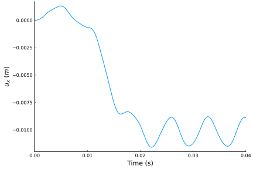 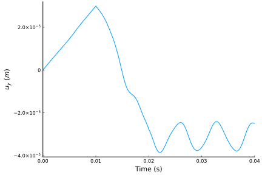 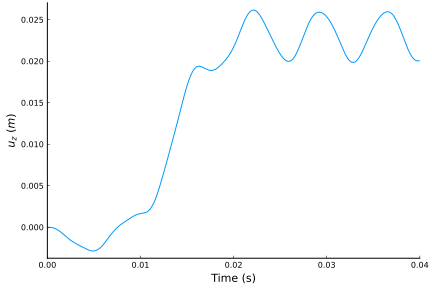 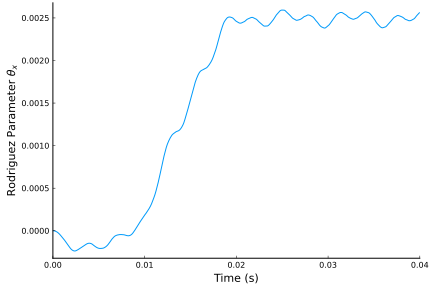 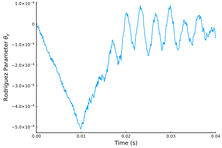 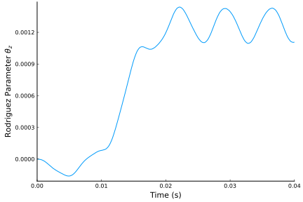 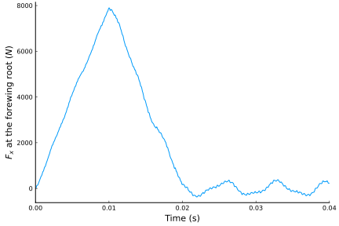 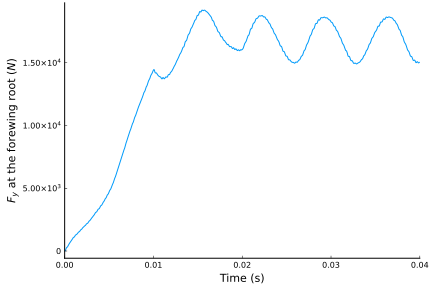 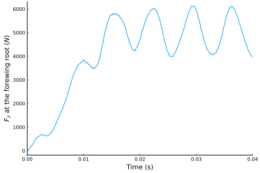 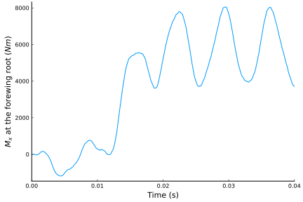 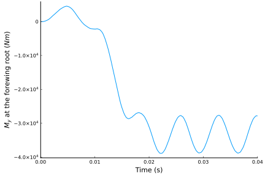 
These graphs are identical to those presented in "GEBT: A general-purpose nonlinear analysis tool for composite beams" by Wenbin Yu and Maxwell Blair.
We can also visualize the time history of the system using ParaView. In order to view the small deflections we'll scale all the deflections up by a couple orders of magnitude. We'll also set the color gradient to match the magnitude of the deflections at each point.
airfoil = [ #FX 60-100 airfoil
0.0000000 0.0000000;
0.0010700 0.0057400;
0.0042800 0.0114400;
0.0096100 0.0177500;
0.0170400 0.0236800;
0.0265300 0.0294800;
0.0380600 0.0352300;
0.0515600 0.0405600;
0.0669900 0.0460900;
0.0842700 0.0508600;
0.1033200 0.0556900;
0.1240800 0.0598900;
0.1464500 0.0640400;
0.1703300 0.0675400;
0.1956200 0.0708100;
0.2222100 0.0733900;
0.2500000 0.0756500;
0.2788600 0.0772000;
0.3086600 0.0783800;
0.3392800 0.0788800;
0.3705900 0.0789800;
0.4024500 0.0784500;
0.4347400 0.0775000;
0.4673000 0.0759600;
0.5000000 0.0740900;
0.5327000 0.0717400;
0.5652600 0.0691100;
0.5975500 0.0660800;
0.6294100 0.0627500;
0.6607200 0.0590500;
0.6913400 0.0551100;
0.7211400 0.0508900;
0.7500000 0.0465200;
0.7777900 0.0420000;
0.8043801 0.0374700;
0.8296700 0.0329800;
0.8535500 0.0286400;
0.8759201 0.0244700;
0.8966800 0.0205300;
0.9157300 0.0168100;
0.9330100 0.0134200;
0.9484400 0.0103500;
0.9619400 0.0076600;
0.9734700 0.0053400;
0.9829600 0.0034100;
0.9903900 0.0019300;
0.9957200 0.0008600;
0.9989300 0.0002300;
1.0000000 0.0000000;
0.9989300 0.0001500;
0.9957200 0.0007000;
0.9903900 0.0015100;
0.9829600 0.00251;
0.9734700 0.00377;
0.9619400 0.00515;
0.9484400 0.00659;
0.9330100 0.00802;
0.9157300 0.00941;
0.8966800 0.01072;
0.8759201 0.01186;
0.8535500 0.0128;
0.8296700 0.01347;
0.8043801 0.01381;
0.7777900 0.01373;
0.7500000 0.01329;
0.7211400 0.01241;
0.6913400 0.01118;
0.6607200 0.00951;
0.6294100 0.00748;
0.5975500 0.00496;
0.5652600 0.00217;
0.532700 -0.00092;
0.500000 -0.00405;
0.467300 -0.00731;
0.434740 -0.01045;
0.402450 -0.01357;
0.370590 -0.01637;
0.339280 -0.01895;
0.308660 -0.021;
0.278860 -0.02275;
0.250000 -0.02389;
0.222210 -0.02475;
0.195620 -0.025;
0.170330 -0.02503;
0.146450 -0.02447;
0.124080 -0.02377;
0.103320 -0.02246;
0.084270 -0.0211;
0.066990 -0.01913;
0.051560 -0.0173;
0.038060 -0.01481;
0.026530 -0.01247;
0.017040 -0.0097;
0.009610 -0.00691;
0.004280 -0.00436;
0.001070 -0.002;
0.0 0.0;
]
section = zeros(3, size(airfoil, 1))
for ic = 1:size(airfoil, 1)
section[1,ic] = airfoil[ic,1] - 0.5
section[2,ic] = 0
section[3,ic] = airfoil[ic,2]
end
write_vtk("dynamic-joined-wing", assembly, history, t, scaling=1e2;
sections = section)